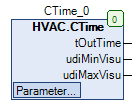

CTime (FB)¶
FUNCTION_BLOCK CTime
Short Description¶
Convertion of a time-input (Dataype: UDINT) into a time-output (Dataype: TIME). The scaling for the time input can be selected. Automatic calculation of min / max limits for input values.
Portrayal¶

Interfaces¶
Inputs¶
Outputs¶
Name Datatype
Range
Init-Value
Functional Description
tOutTime TIME 0 ... 4294967295ms Timevalue (Datatype: TIME)
udiMinVisu UDINT Display of tMinTime for visualization
udiMaxVisu UDINT Display of tMaxTime for visualization
Setpoints / Parameters¶
Name Datatype
Range
Init-Value
Functional Description
udiTime UDINT 0 ... 4294967295 Timevalue (Limit: 0..7 Days) depending on scaling
eTimeScale eTime
Seconds, Minutes, Hours
eTime.seconds
Commitment of the scaling of the time-input (seconds, minutes, hours)
tMinTime TIME 0 ... 4294967295ms 0s Lower limit for the time-input udiTime
tMaxTime TIME 0 ... 4294967295ms 2h Upper limit for the time-input udiTime
Functional Description¶
General¶
Visualization¶
Suitable visualization element from the HVACV Visu Library: CTime and CTime_single_input
Portrayal¶
Interfaces Visu-Element¶
Name Datatype
Type
Init-Value
Functional Description
FB_CTime CTime VAR_IN_OUT Enter FB instance CTime here Example: PRG.CTime
sDialogTitle STRING VAR_INPUT Enter title in string format e.g.: ‘Enter room temperature’ - appears in the Numpad during entry.
iFieldSizeL INT VAR_INPUT 0 Field increases by the number of pixels entered to the left. Needed to display long numbers or units.
iFieldSizeR INT VAR_INPUT 0 Field increases by the number of pixels entered to the right. Needed to display long numbers or units.
The unit second ‘s’ minute ‘m’ or hour ‘h’ is automatically adjusted via the setting in FB CTime. The MIN and MAX input limit is also automatically generated via the FB and adjusted in the visual element. Can be changed at runtime! | Note: VAR_IN_OUT interfaces must be assigned, VAR_INPUT are optional. | |
The visualization element CTime_single_input works like CTime but all inputs must be entered separately via the interfaces. So you can use this visualization element without your component CTime.
Interfaces Visu element CTime_single_input¶
Name Datatype
Type
Init-Value
Functional Description
udiTime UDINT VAR_IN_OUT Enter the UDINT variable here.
eTimeScale HVAC.eTime VAR_INPUT The Enum eTimeScale can be entered here. Display whether second, minute or hour.
udiMinVisu UDINT VAR_INPUT 0 The MIN input limit can be entered here. Inputs below this are not accepted via the visualization.
udiMaxVisu UDINT VAR_INPUT 7200 The MAX input limit can be entered here. Entries about this are not accepted via the visualization.
sDialogTitle STRING VAR_INPUT Enter title in string format e.g.: ‘Enter follow-up time’ - appears in the Numpad during entry.
iFieldSizeL INT VAR_INPUT 0 Field increases by the number of pixels entered to the left. Needed to display long numbers or units.
iFieldSizeR INT VAR_INPUT 0 Field increases by the number of pixels entered to the right. Needed to display long numbers or units.
Codesys¶
- InOut:
Scope Name Type Initial Comment Input tMaxTime TIME TIME#120m0s0ms Upper limit for time entry udiTime (0 ... 4294967295ms)
tMinTime TIME TIME#0ms Lower limit for time entry udiTime (0 ... 4294967295ms)
eTimeScale eTime eTime.Second Commitment of the scaling of the time-input (seconds, minutes, hours)
udiTime UDINT Timevalue (Limit: 0..7 Days) depending on scaling
Output tOutTime TIME Timevalue (Datatype: TIME)
udiMinVisu UDINT Display of tMinTime for visualization
udiMaxVisu UDINT Display of tMaxTime for visualization